기상기사 (2021-03-07 기출문제)
1과목: 기상관측법
1. 설척(snow scale)을 이용하여 적설을 직접 관측하는 것에 관한 설명으로 틀린 것은?
- 3시간 단위의 적설값은 정시에 측정한 값을 취한다.
- 적설이란 관측장소(노장)의 지면을 절반이상 덮고 잇는 것을 말한다.
- 적설판 위의 눈은 표면이 균일하지 않아 깊이가 일정하지 않으므로 관측자는 그 평균값을 관측해야 한다.
- 일별 최심신적설은 15UTC를 일계로 하여 24시간 동안에 새로 내려 쌓인 눈의 깊이가 가장 깊었을 때의 깊이와 그 시각을 측정하는 것이다.
(정답률: 41%)

2. WMO 기상측기관측법에 제시된 고층기상요소와 오차허용 범위로 틀린 것은?
- 기온 – 지상에서 100hPa 까지 ±0.5℃
- 기압 – 지상에서 5hPa 까지 ±hPa
- 풍속 – 지상에서 100hPa 까지 ±1m/s
- 풍향 – 지상에서 100hPa 까지 풍속이 15m/s 미만인 경우 ±10°
(정답률: 55%)
3. 라이다(Lidar) 설명 중 적합하지 않은 것은?
- 레이더의 작동원리와 유사하다.
- 주로 전방산란 에너지를 포착한다.
- 주로 대기 중 에어로졸을 탐지한다.
- 구름이 있을 경우 탐지거리의 제약을 받는다.
(정답률: 48%)
4. 낙뢰(落雷)에 대한 설명으로 옳은 것은?
- 구름과 구름 사이를 이동하는 섬광
- 구름에서 지면으로 연결되는 번개 불빛
- 발달한 구름대에서 발생하는 자기적 현상
- 대기의 급격한 가열에 의해 팽창하면서 내는 폭음
(정답률: 70%)
5. 지상 일기도에 기입되는 기압을 구하기 위해 필요한 보정이 아닌 것은?
- 기차보정
- 습도보정
- 온도보정
- 중력보정
(정답률: 63%)
6. 시정관측에 대한 설명 중 옳지 않은 것은?
- 시정이 방향에 따라 다르면 최소시정을 택한다.
- 목표물을 확인할 수 있는 최대거리를 관측한다.
- 목표물은 뚜렷이 빛나는 밝은 물체를 택하여야 한다.
- 시정은 사방의 목표가 잘 바라보이는 장소에서 관측한다.
(정답률: 74%)
7. 기상위성에서 적외선 영상에 가장 많이 이용되는 파장은?
- 약 0.1 ~ 0.6㎛
- 약 1.0 ~ 1.6㎛
- 약 10.0 ~ 12.0㎛
- 약 100.0 ~ 120.0㎛
(정답률: 75%)
8. 기상레이더의 하드웨어 캘리브레이션 항목이 아닌 것은?
- 레이돔 손실
- 레이더 진동수
- 레이더 트리거
- 레이더 첨두출력
(정답률: 50%)
9. 구름 관측의 요소가 아닌 것은?
- 운량
- 구름의 높이
- 구름의 온도
- 구름의 형태
(정답률: 84%)
10. 대기수상(hydro meteors)이 아닌 것은?
- 박무(mist)
- 무빙(rime)
- 무지개(rainbow)
- 날린 눈(blowing snow)
(정답률: 57%)
11. 레윈존데(Rawinsonde)로 측정되지 않는 기상요소는?
- 기압
- 기온
- 일사
- 풍속
(정답률: 80%)
12. 종관 지상관측에서 기온의 관측높이에 관한 설명으로 옳은 것은?
- 관측자의 눈높이 정도
- WMO 규정 상 2m 높이
- 지면 위 1.2 ~ 1.5m의 높이
- 백엽상의 규격에 따라 정해진 높이
(정답률: 57%)
13. 정지기상위성은 적도 상공 몇 km 높이에 위치하고 있는가?
- 약 850km
- 약 1850km
- 약 3600km
- 약 36000km
(정답률: 60%)
14. 종관관측에서 운고(雲高)의 기준으로 옳은 것은? (단, 관측장소 기준이다.)
- 지표면에서부터 운저(雲低)까지의 높이
- 지표면에서부터 운정(雲頂)까지의 높이
- 지표면에서부터 운저(雲低)까지의 높이 + 관측장소의 해발고도
- 지표면에서부터 운정(雲頂)까지의 높이 + 관측장소의 해발고도
(정답률: 53%)
15. 기상전보에서 일반적으로 풍향을 나타내는 방위는?
- 8방위
- 16방위
- 32방위
- 36방위
(정답률: 55%)
16. 종관기상관측에서의 시정관측에 관한 내용 중 옳은 것은?
- 계기관측은 시정 1km 이내에서만 유효하다.
- 원칙적으로 계기에 의한 자동관측이 요구된다.
- 야간시정관측에서 계기관측은 실용상 불가능하다.
- 주간시정관측에서 계기관측이 목측보다 반드시 유리하지는 않다.
(정답률: 67%)
17. 화살형의 풍향계를 설치할 때 주의사항으로 가장 부적절한 것은?
- 풍향계의 설치 높이는 가능한 낮게 한다.
- 철관은 강풍에 견딜 수 있도록 완전하게 고정한다.
- 수목이나 건물 등의 장애물이 없는 장소에 설치하는 것이 좋다.
- 화살의 방향과 방위판상의 시침의 위치를 정확하게 맞추어서 고정한다.
(정답률: 70%)
18. 빛의 회절에 의한 현상은?
- 무리(halo)
- 코로나(corona)
- 신기루(mirage)
- 무지개(rainbow)
(정답률: 35%)
19. 강수현상이 전혀 없는 경우의 기입 방법은?
- -
- 0
- 0.0
- 결측
(정답률: 70%)
20. 해저에서 대규모 지진이 발생하여 해저지각이 크게 융기 또는 침강할 때 해수면이 요동쳐서 파장이 긴 파로 전파되는 현상은?
- 태풍
- 용오름
- 지진해일
- 토네이도
(정답률: 70%)
2과목: 대기열역학
21. 대기열역학선도(또는 대기선도)에서 주어진 기압면의 기온점에서 건조단열선을 따라 1000hPa면과 교차하는 점의 기온은?
- 온위
- 상당온도
- 습고온도
- 습구온위
(정답률: 46%)
22. 균질 대기의 고도는 어떻게 표현되는가? (단, 여기서
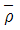
는 균질 대기의 밀도, g는 중력 가속도, P0는 지면 기압, Cv와 R은 각각 정적비열과 비기체상수이다.)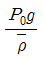
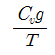
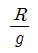
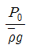
(정답률: 46%)
23. 등밀대기의 높이 H를 바르게 나타낸 것은? (단, 중력 가속도는 g, 기체상수는 R, 지상기온은 T이다.)
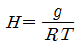
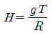
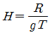
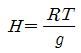
(정답률: 35%)
24. 비체적(Specific volume)이 100cm3/g이고, 기압이 1000hPa인 공기괴를 같은 기압 하에서 비체적을 200cm3/g으로 팽창시켰을 때 한 일의 양은?
- 10J/g
- 100J/g
- 200J/g
- 1000J/g
(정답률: 20%)
25. 500hPa에서 0℃인 공기의 온위는 약 몇 ℃인가? (단, R=287JK-1kg-1, Cp=1004JK-1kg-1이며, (0.5)0.2859=0.82, 20.2859=1.22이다.)
- 0℃
- 30℃
- 60℃
- 90℃
(정답률: 36%)
26. 열역학계에서의 상태변수가 아닌 것은?
- 위치
- 비체적
- 엔트로피
- 내부에너지
(정답률: 27%)
27. 정역학 방정식에 관한 내용으로 옳은 것은?
- 기압차와 고도차 사이의 관계식
- 기압차와 기온차 사이의 관계식
- 기압차와 밀도차 사이의 관계식
- 기압차와 부피차 사이의 관계식
(정답률: 40%)
28. 가온도에 대한 설명으로 옳지 않은 것은?
- 가온도는 이슬점 온도보다 낮다.
- 가온도는 그 공기의 온도보다 높거나 같다.
- 가온도는 공기덩이 속에 포함된 수증기의 함량을 고려한 온도이다.
- 가온도는 건조공기가 습윤공기와 같은 기압, 비적을 가질 때의 온도이다.
(정답률: 50%)
29. 마르그레스(Margules, M.)의 이론에 따라 상하로 놓여있던 기층(氣層)이 뒤바뀌었을 때의 에너지 변화에 대한 설명 중 틀린 것은?
- 위치에서지의 감소에 의해 운동에너지가 생긴다.
- 위치에너지의 감소가 저기압의 운동을 주도한다.
- 운동에너지와 위치에너지의 합인 역학에너지가 증가한다.
- 위치에너지의 감소분만큼 운동에너지가 된 것을 유효위치에너지(available potential energy)라고 한다.
(정답률: 32%)
30. 초기의 기온 감률에 관계없이 공기층이 상승하여 포화된 후 안정한 경우를 의미하는 것은?
- 대류안정
- 잠재안정
- 절대안정
- 위잠재안정
(정답률: 50%)
31. 습윤공기의 상승과 온도변화를 4단계로 표시한 그림에서 성우급(成雨級)은?
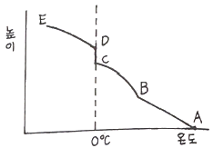
- AB
- BC
- CD
- DE
(정답률: 40%)
32. 단열변화 시 위상당온위(Potential pseudo-equivalent temperature)의 값은?
- 건조 및 습윤단열 변화 시 모두 불변
- 건조 및 습윤단열 변화 시 모두 변화
- 건조단열 변화 시 불변, 습윤단열 변화 시 변화
- 건조단열 변화 시 변화, 습윤단열 변화 시 불변
(정답률: 21%)
33. 깊은 대류운이 발달하고 있는 해양대기의 연직(열역학적)구조의 일반적인 상태는?
- 중립
- 절대안정
- 조건부 불안정
- 특별한 상태가 없음
(정답률: 67%)
34. 단열선도에 표시된 C점은?
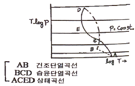
- 응결고도
- 0℃의 고도
- 대류응결고도
- 자유대류고도
(정답률: 32%)
35. 1 Joule은 약 몇 cal의 열량에 해당되는가?
- 0.04
- 0.24
- 2.45
- 4.20
(정답률: 40%)
36. 대기압이 1000hPa, 기온이 283K, 수증기압이 8.0hPa일 때 혼합비는(g/kg)?
- 약 0.5
- 약 5
- 약 50
- 약 500
(정답률: 15%)
37. 불포화 상태의 두 공기를 등압 상태에서 혼합할 때 나타날 수 있는 결과로 옳은 것은?
- 두 공기의 온도차가 크면 과포화가 가능하다.
- 과포화는 불가능하지만 포화 상태는 가능하다.
- 두 공기의 온도차가 작을수록 과포화가 가능하다.
- 불포화인 두 공기를 혼합했으므로 과포화는 절대 불가능하다.
(정답률: 46%)
38. 정압비열 Cp가
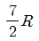
일 때 정적비열 Cv의 값은?- R
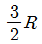
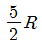
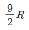
(정답률: 59%)
39. 1g의 공기괴에 대해 420K에서 10cal의 열을 가해 주었다. 엔트로피(entropy)의 변화량(Jg-1K-1)은?
- 약 0.01
- 약 0.1
- 약 10
- 약 100
(정답률: 35%)
40. 1000hPa에서 15℃인 공기의 밀도는?(단, 공기의 기체상수는 287JK-1kg-1이다.)
- 1.00kg/m3
- 1.04kg/m3
- 1.12kg/m3
- 1.21kg/m3
(정답률: 18%)
3과목: 대기운동학
41. 기압좌표계의 운동방정식에 관여하지 않는 요소는?
- 온도 이류
- 중력가속도
- 지오포텐셜
- 코리올리인자
(정답률: 42%)
42. 일반적으로 폐곡선운동에 대한 소용돌이도는?
- 곡률반지름과 속도를 곱한 것이다.
- 순환을 폐곡선면적으로 곱한 것이다.
- 순환을 폐곡선면적으로 나눈 것이다.
- 곡선상의 속도의 평균을 곡선의 길이로 나눈 것이다.
(정답률: 29%)
43. 적도에 중심을 둔 반경 50km 크기의 원형 공기덩이가 초기에 지구에 대해 3140m2s-1로 순환을 하고 있다. 이 공기덩이가 면적을 일정하게 유지하면서 등압면을 따라 북극으로 이동한다면 지구에 대한 이 공기덩이의 순환(m2s-1)은 대략 얼마인가? (단, 순압대기라고 가정한다.)
- 1141700
- 1142100
- -1141700
- -1142100
(정답률: 38%)
44. y-방향의 속도분포가 u=3y2+60y-10(-100m≤y≤100m)으로 주어진 직선류가 있을 때 소용돌이도가 0이 되는 곳은?
- y=10m
- y=100m
- y=-10m
- y=-100m
(정답률: 40%)
45. 구면좌표계(spherical coordinate)에서의 운동 방정식을 대규모 공기의 운동에 적용하면 수직가속도 성분과 코리올리항을 무시할 수 있는데 이 때 얻을 수 있는 기본 방정식은?
- 연속 방정식
- 상태 방정식
- 에너지 방정식
- 정역학 방정식
(정답률: 41%)
46. 아래식에서 [X]에 들어갈 물리적인 양의 차원은? (단, M은 질량, L은 길이, S는 시간, K는 온도의 차원이다.)
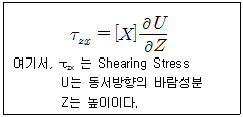
- MKLS-2
- ML2S-2
- ML-1S-1
- MLS-1K
(정답률: 29%)
47. 북반구에서 미사일을 1000m/s 속도로 정북방향으로 발사하여 수평거리 1000km까지 옮겨가게 된다면 이 미사일은 지구의 전향력으로 인해 정북방향에서 어느 방향으로 얼마나 벗어나게 되는가? (단, Coriolis parameter = 10-4s-1로 가정한다.)
- 동쪽으로 50km
- 서쪽으로 50km
- 동쪽으로 100km
- 서쪽으로 100km
(정답률: 19%)
48. 임의지역에서 지상기온이 동쪽으로 감에 따라 0.5℃/100km의 비율로 증가하고 있다. 편서풍이 초속 10m로 부는 경우, 이 지역에서 1시간 후 기온은? (단, 기온의 국지적 변화는 오직 이류 효과에 의한 것이라 가정한다.)
- 0.18℃ 감소
- 0.18℃ 증가
- 1.8℃ 감소
- 1.8℃ 증가
(정답률: 19%)
49. 중위도에서 고위도로 각운동량과 열을 수송하기 위해서는 북쪽으로 갈수록 파동이 골과 마루의 축이 어느 방향으로 기울어져야 하는가?
- 골의 축만 서쪽으로 기울어져야 한다.
- 골의 축만 동쪽으로 기울어져야 한다.
- 두 축 모두 서쪽으로 기울어져야 한다.
- 두 축 모두 동쪽으로 기울어져야 한다.
(정답률: 40%)
50. 북반구 500hPa면에서 등고선이 넓어지는 지역에서의 500hPa 지균풍(geostrophic wind)변화로 옳은 것은?
- 풍속이 느려지고 등고선이 높은 쪽 방향으로의 바람 성분이 강해진다.
- 풍속이 느려지고 등고선이 낮은 쪽 방향으로의 바람 성분이 강해진다.
- 풍속이 빨라지고 등고선이 높은 쪽 방향으로의 바람 성분이 강해진다.
- 풍속이 빨라지고 등고선이 낮은 쪽 방향으로의 바람 성분이 강해진다.
(정답률: 27%)
51. 기상학에서 초장파의 파장 규모(order)는?
- 10km
- 102km
- 103km
- 104km
(정답률: 46%)
52. 700hPa 이하의 고도에서 저기압 쪽으로 바람이 불어 들어가는 이유로 가장 알맞은 것은?
- 지구자전
- 지표면의 마찰
- 공기밀도의 차
- 코리올리스 인자
(정답률: 44%)
53. 지면으로부터 상공으로 올라갈수록 등압선과 풍향 사이의 각은?
- 점점 커진다.
- 점점 작아진다.
- 변화하지 않는다.
- 불규칙적으로 작아지고 커짐을 반복한다.
(정답률: 31%)
54. 절대소용돌이도(absolute vorticity)에 대한 설명으로 옳은 것은?
- 지표소용돌이도와 같다.
- 지표소용돌이도와 상대소용돌이도의 차이다.
- 지표소용돌이도와 상대소용돌이도의 합이다.
- 지표소용돌이도의 어느 지점에서의 소용돌이도를 말한다.
(정답률: 46%)
55. 종관규모의 운동에서 연직 p-속도(ω)의 근사값으로 가장 적합한 식은? (단, p는 기압,
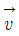
는 속도벡터, W는 연직속도, t는 시간, ρ는 공기밀도, g는 중력가속도)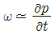
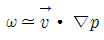
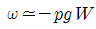
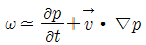
(정답률: 34%)
56. 북반구의 한 지점에서 반시계 방향으로 경도풍이 불고 있을 때 중심기압과 힘의 균형 관계로 옳은 것은?
- 저기압 : 기압경도력 – 원심력 = 전향력
- 저기압 : 기압경도력 + 원심력 = 전향력
- 고기압 : 전향력 – 원심력 = 기압경도력
- 고기압 : 구심력 + 전향력 = 기압경도력
(정답률: 21%)
57. 온위가 고도에 관계없이 거의 일정한 층은?
- 혼합층
- 에크만층
- 내부경계층
- 접지경계층
(정답률: 48%)
58. 열대성 저기압 시스템의 주된 발달기구(mechanism)는?
- 에디 운동 에너지
- 동서 평균 운동 에너지
- 수증기 응결에 의한 잠열 방출
- 비균질 가열에 의한 에디 위치 에너지
(정답률: 48%)
59. 장주기 변동의 하나인 블로킹(blocking)현상에 대한 설명 중 옳지 않은 것은?
- 주로 여름에 가장 많이 발생한다.
- 블로킹이 발생하게 되면 고기압과 저기압의 이동경로가 정상 상태와는 크게 달라진다.
- 편서풍이 정상적으로 흐르지 못하고 남북으로 크게 사행하는 구조를 유지한 채 수 일 이상 지속되는 현상이다.
- 북쪽으로 편서풍을 편향하게 하는 오메가형과 남북으로 거의 대칭에 가까운 Rex형, 두 가지로 크게 분류할 수 있다.
(정답률: 37%)
60. Rossby에 의한 장파이동속도(C)가 다음과 같을 때 장파가 서쪽에서 동쪽으로 이동하는 경우에 해당하는 것은? (단, U는 평균대상풍속, L은 파장, β는 코리올리 인자의 위도 변화)
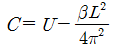
- U ＞ C ＞ 0
- U ＞ C = 0
- U ＞ 0 ＞ C
- C ＞ 0 ＞ U
(정답률: 43%)
4과목: 기후학
61. 대기의 대순환에 관한 설명 중 틀린 것은?
- 페렐 세포는 열적으로 직접 순환한다.
- 페렐 세포는 위치에너지를 증가시키는 순환이다.
- 해들리 세포는 온동에너지를 증가시키는 순환이다.
- 대순환은 태양에너지의 차등가열(differential heating)에 의해 발생한다.
(정답률: 42%)
62. 건구온도와 습구온도를 사용해서 구할 수 있는 것은?
- 불쾌지수
- 폭염일수
- 열대야일수
- 자외선지수
(정답률: 66%)
63. 대기의 대순환과 관련이 없는 풍계는?
- 몬순
- 무역풍
- 편서풍
- 해륙풍
(정답률: 55%)
64. 쾨펜의 기후구분에서 사막기후(desert climate)에 해당하는 기호는?
- Aw
- BW
- ET
- Cs
(정답률: 53%)
65. 최난월이 1년 중 가장 늦게 나타나는 기온 연변화형은?
- 적도형
- 중위도 대륙형
- 중위도 해양형
- 몬순(monsoon)형
(정답률: 41%)
66. 에크만(Ekman) 흐름에 대한 설명으로 옳지 않은 것은?
- 에크만 수송은 고기압에서 저기압 방향으로 일어난다.
- 북반구 해양에서 에크만 수송은 바람 방향의 오른편으로 일어난다.
- 북반구 에크만 층에서 에크만 수송은 상층 지균풍 방향의 왼편으로 일어난다.
- 북반구 편서풍 지역, 에크만 층에서 바람은 상층으로 올라가면서 시계 반대 방향으로 돈다.
(정답률: 23%)
67. 일반적으로 수증기압이 가장 큰 지방은?
- 열대 사막지방
- 온대 내륙지방
- 열대 해안지방
- 한대 해안지방
(정답률: 57%)
68. 산곡풍(山谷風)에 관한 설명 중 옳은 것은?
- 주로 바람이 강한 날 발생한다.
- 야간에는 계곡이 더 빠르게 복사냉각된다.
- 밤에 계곡을 향해서 불어 내리는 바람이 곡풍이다.
- 산 경사면과 계곡 사이 복사가열과 냉각의 차이에 의해 생긴다.
(정답률: 46%)
69. 적토 동태평양에서 중앙태평양까지 해수면 온도가 상승하면서 일어나는 엘니료 현상의 주요 원인은?
- 적도 편동풍이 약해졌기 때문이다.
- 중위도 편서풍이 강해졌기 때문이다.
- 남아메리카 서쪽 해안의 용승이 강해졌기 때문이다.
- 적도 서태평양 해수면 온도가 평소보다 상승하기 때문이다.
(정답률: 40%)
70. 세계 강수량 분포를 볼 때 겨울에 비가 많고 여름에 건조한 기후형은?
- 적도형
- 열대형
- 계절풍형
- 지중해형
(정답률: 53%)
71. 우리나라에 영향을 미치는 기단 중 화중, 화남지방에서 온난건조한 일기를 나타내는 기단은?
- cP
- mP
- mT
- cT
(정답률: 62%)
72. 다음 우리나라 지역 중 무강수 계속기간이 가장 긴 곳은?
- 대구
- 전주
- 대관령
- 울릉도
(정답률: 40%)
73. 우리나라를 쾨펜(Köppen)의 기후구분으로 분류할 때 가장 적은 면적을 차지하는 것은?
- Cf
- Cw
- Df
- Dw
(정답률: 19%)
74. 그림은 우리나라 어느 지역의 1920년대와 1990년대의 계절 길이변화를 분석한 결과이다. 다음 중 계절 길이변화와 가장 관련이 높은 것은?
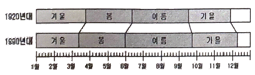
- 지구 온난화
- 엘니뇨의 발생
- 여름 강수량 증가
- 열대성 저기압 증가
(정답률: 59%)
75. 기온의 일교차(日較差)가 가장 작은 곳은?
- 북극 부근
- 60°N 부근
- 30°N 부근
- 적도 부근
(정답률: 5%)
76. 다음 우리나라 지역 중 기온의 연교차가 가장 적은 지역은?
- 제주
- 춘천
- 울릉도
- 중강진
(정답률: 52%)
77. 무상기간(無霜期間, 서리가 없는 기간)에 가장 관계가 깊은 기상 요소는?
- 일최고 기온
- 일최저 기온
- 일평균 기온
- 월평균 기온
(정답률: 53%)
78. 습도의 연변화형 중 우기가 있는 계절에만 습도가 높게 나타나는 것끼리 이어진 것은?
- 대륙성 - 열대성
- 몬순성 - 열대성
- 해양성 - 열대성
- 해양성 – 몬순성
(정답률: 24%)
79. 공기 상승의 원인이 아닌 것은?
- 지표면의 가열
- 하층기류나 기단의 수렴
- 고기압 중심에서의 수직기류
- 언덕이나 산등에 의한 강제상승
(정답률: 50%)
80. 태양상소를 나타낸 것으로 옳은 것은?
- 13.67W/m2
- 137W/m2
- 1367W/m2
- 13670W/m2
(정답률: 40%)
5과목: 일기분석 및 예보론
81. 수치예보 분야에서 새로운 방법으로 시도하고 있는 앙상블예보에 대한 설명으로 알맞은 것은?
- 확률론적인 예보라 할 수 있다.
- 모든 수치예보 결과를 조화함수를 사용하여 다시 계산하는 방법이다.
- 막대한 전산자원이 필요하여 현업적으로는 현재 이용하지 못하고 있다.
- 조화함수의 계산 오차 때문에 정밀한 작은 규모의 수치모델에서는 적용이 불가능하다.
(정답률: 25%)
82. 상하층의 풍향변화가 온난이류가 있음을 의미하는 것은?
- 상층 : 남풍, 하층 : 서풍
- 상층 : 서풍, 하층 : 북풍
- 상층 : 동풍, 하층 : 남동풍
- 상층 : 북서풍, 하층 : 서풍
(정답률: 32%)
83. 지상일기도에서 다음과 같이 기입된 일기 부호에 대한 현상으로 알맞은 것은?
- 해빙(sea ice)
- 유빙(drift ice)
- 결빙(freezing)
- 해명(oceanic noise)
(정답률: 31%)
84. 다음 중 온난전선의 특징이 가장 잘 나타나는 일기도는?
- 200hPa 일기도
- 500hPa 일기도
- 700hPa 일기도
- 850hPa 일기도
(정답률: 27%)
85. Richardson’s number와 관계가 가장 깊은 것은?
- 대기의 난류
- 태풍의 전향
- 고기압의 이동
- 상층운의 형성
(정답률: 37%)
86. 복사안개가 가장 발생하기 쉬운 상태는?
- 흐린 날
- 맑은 날
- 비가 오는 날
- 바람이 강한 날
(정답률: 48%)
87. 국제 기상전보문에 포함되는 현재 일기부호 ⑤를 맞게 설명한 것은?
- 시정장애가 비로 기인할 때
- 시정장애가 안개로 기인할 때
- 시정장애가 눈으로 기인할 때
- 시정장애가 먼지로 기인할 때
(정답률: 31%)
88. Richardson’s number가 풍속의 고도 경도에 대해 가지는 관계로 옳은 것은?
- 풍속의 고도경도에 정비례한다.
- 풍속의 고도경도에 반비례한다.
- 풍속의 고도경도의 제곱에 정비례한다.
- 풍속의 고도경도의 제곱에 반비례한다.
(정답률: 36%)
89. 다음 중 온도경도가 가장 큰 전선은?
- 극전선
- 적도전선
- 한대전선
- 해륙풍전선
(정답률: 50%)
90. 실제대기의 기온 분포가 고도증가에 따라 습윤단열감율보다 작을 때의 상태는?
- 안정
- 불안정
- 대류 불안정
- 조건부 불안정
(정답률: 31%)
91. 다음에서 설명하는 고도는?
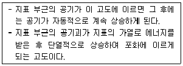
- 평형고도
- 대류응결고도
- 상승응결고도
- 자유대류고도
(정답률: 18%)
92. 장마전선이 속하는 것은?
- 온난전선
- 정체전선
- 폐색전선
- 한랭전선
(정답률: 59%)
93. 700hPa 일기도에서 강한 상승기류가 존재할 때 500hPa 일기도에서 예상될 수 있는 것은?
- 순압대기
- 양(+)의 와도
- 음(-)의 와도
- 기압의 능(Ridge)
(정답률: 44%)
94. 집중호우가 발생하기 쉬운 경우가 아닌 것은?
- 태풍이 북상할 때
- 하층 제트가 존재할 때
- 500hPa에 난기가 존재할 때
- 장마전선 상에 저기압이 발달할 때
(정답률: 42%)
95. 지균풍을 나타내는 식으로 알맞은 것은? (단, f: 지구자전에 의한 전향력, ρ: 밀도)
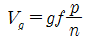
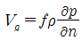
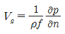
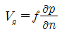
(정답률: 42%)
96. 300hPa면의 고도는 700hPa면 고도의 약 몇 배인가?
- 2배
- 3배
- 4배
- 5배
(정답률: 44%)
97. 기압경도(
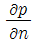
)가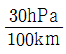
, 반경이 100km인 선형풍(cyclostrophic wind)의 풍속은? (단, 공기의 밀도 ρ=1.2kg/m3)- 30m·s-1
- 40m·s-1
- 50m·s-1
- 60m·s-1
(정답률: 17%)
98. 공기덩어리의 실제 기온감율이 건조단열감율 보다 클 때 안정도는?
- 안정
- 중립
- 불안정
- 절대안정
(정답률: 15%)
99. 온도풍에 대한 다음 설명 중 틀린 것은?
- 가상적인 바람이다.
- 북반구에서는 온도풍의 왼쪽에 한기가 있다.
- 그 크기는 두 층간의 평균기온 경도에 비례한다.
- 대기의 상부와 하부층의 지균풍 벡터의 합으로 나타난다.
(정답률: 34%)
100. 지상저기압이 발달할 때의 조건으로 알맞은 것은?
- 상층이나 하층 모두 수렴할 때
- 상층이나 하층 모두 발산할 때
- 상층에서 수렴, 하층에서 발산할 때
- 하층에서 수렴, 상층에서 발산할 때
(정답률: 48%)